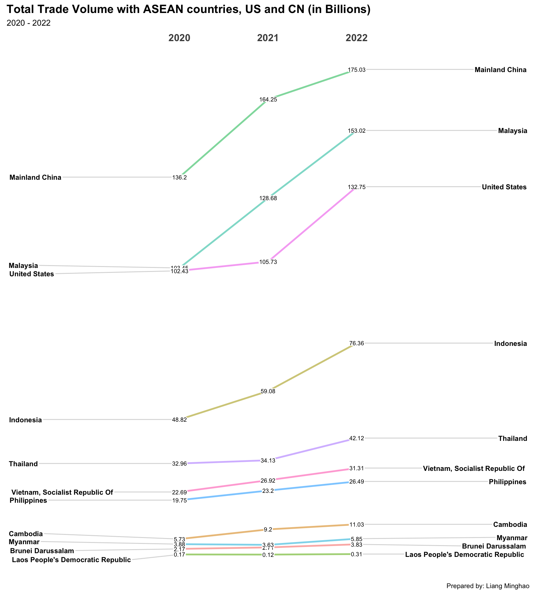
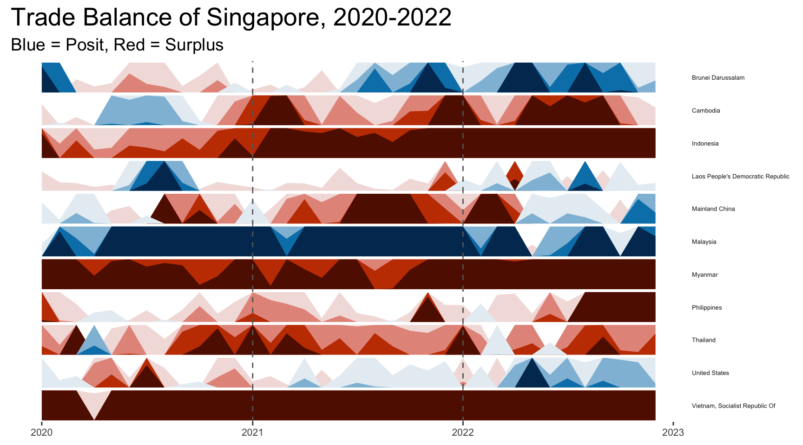

pacman::p_load(dplyr, tidyverse, ggplot2, ggthemes,ggHoriPlot, lubridate, readxl, knitr,CGPfunctions,plotly)Take-home Exercise 4
take-home exercise
This take home exercise aims to uncover the impact of COVID-19 as well as the global economic and political dynamic in 2022 on Singapore bi-lateral trade by using various analytical visualisation techniques.
1. Overview
The COVID-19 pandemic has significantly impacted the global trade and economy since its outbreak in Year 2020. In this study, we will analyse the import and export volume between Singapore and other ASEAN countries, US as well as China.
2. Data Processing
The data used for this take-home exercise is extracted from SingStat, in excel spreadsheet format.
2.1. Loading Libraries
2.2. Loading Data
import <- read_excel('/Users/minghaooo/mtlmh34/ISSS608-VAA-mh/Data/outputFile.xlsx', sheet='T1',
skip = 9, n_max = 120)
export <- read_excel('/Users/minghaooo/mtlmh34/ISSS608-VAA-mh/Data/outputFile.xlsx', sheet='T2',
skip = 9, n_max = 120)2.3. Data Wrangling
In data wrangling, the following tasks are performed: - focus on only trades with ASEAN countries, US and China - focus on only data in 2020-2022 - transpose the data to long table - join import and export data
trade_countries <- c("Brunei Darussalam","Indonesia","Malaysia","Philippines",
"Thailand","Myanmar","Cambodia","Laos People's Democratic Republic",
"Vietnam, Socialist Republic Of", "Mainland China", "United States")
processing <- function(df){
df$'Data Series' <- str_replace(df$'Data Series', ' \\(Thousand Dollars\\)', '')
df <- df %>%
rename('Country' = 'Data Series') %>%
filter(Country %in% trade_countries) %>%
select('Country'|starts_with('2022')|starts_with('2021')|starts_with('2020')) %>%
pivot_longer(!Country, names_to = 'Month', values_to = 'Thousands')
return(df)
}
import_by_country <- processing(import)
export_by_country <- processing(export)
# Merge two dataset, sort by country and month ascending
import_export_by_country <- left_join(import_by_country,export_by_country,
by=join_by('Country', 'Month')) %>%
mutate(Month=substr(ym(Month),1,7)) %>%
arrange(Country,Month) %>%
rename('Import' = 'Thousands.x', 'Export' = 'Thousands.y')
import_export_by_country$Total <- import_export_by_country$Import+import_export_by_country$ExportThe dataframe after pre-processing is as follows:
kable(head(import_export_by_country), 'pipe')| Country | Month | Import | Export | Total |
|---|---|---|---|---|
| Brunei Darussalam | 2020-01 | 278270 | 92138 | 370408 |
| Brunei Darussalam | 2020-02 | 242796 | 98823 | 341619 |
| Brunei Darussalam | 2020-03 | 70923 | 92062 | 162985 |
| Brunei Darussalam | 2020-04 | 96185 | 105793 | 201978 |
| Brunei Darussalam | 2020-05 | 49763 | 64689 | 114452 |
| Brunei Darussalam | 2020-06 | 36456 | 114980 | 151436 |
3. Visualizations
3.1. Slopegraph
The Slopegraph reveals the total trade volumes of these countries with Singapore. It is easier to visualize the trend in this way, as the increase/decrease in volume can be shown by the slope-up/slope-down of the lines.
# compute year
import_export_by_country$Year <- substr(import_export_by_country$Month,1,4)
# group by year, sum up import and export
import_export_by_country %>%
group_by(Country, Year) %>%
summarise(Total=round(sum(Total)/1000/1000,2)) %>%
mutate(Year = factor(Year)) %>%
newggslopegraph(Year, Total, Country,
Title = "Total Trade Volume with ASEAN countries, US and CN (in Billions)",
SubTitle = "2020 - 2022",
Caption = "Prepared by: Liang Minghao")
Insights
Overall trend: from 2020-2022, the merchandise trade volume between Singapore and the selected countries gradually increase year by year, with China, Malaysia and the US being the top 3 trading partners.
ASEAN countries: among ASEAN countries, Malaysia is the most dominant trading partners, with Indonesia at the second place, followed by Thailand, Vietnam and Philippines; the trade volume of Cambodia, Myanmar, Brunei, and Laos is relatively less significant.
China: The slopegraph showed that after 2020, the trade with Mainland China continuously increase in 2021 and 2022.
The US: The trade volume in 2021 was about the same as that of 2020, followed by a rapid growth in 2022.
3.2. Horizon Graph
# difference = import - export
# different +, means deficit; else means surplus
import_export_by_country$difference=import_export_by_country$Import-import_export_by_country$Export
import_export_by_country$Month=ym(import_export_by_country$Month)
deficit_by_country <- import_export_by_country[,c('Country','Month','difference')]The horizon graph displays the Trade Balance trend of Singapore over the past 3 years. In the visualization, each row represents one country, and the blue color shows negative trade balance (where import trade volume is greater than export), and the red color shows vice versa.
#horizon graph
deficit_by_country %>%
ggplot() +
geom_horizon(aes(x = Month, y = difference),
origin = 0, # set origin = 0 to reflect deficit/surplus by diff. colours
horizonscale = 8) +
facet_grid(`Country`~.) +
# year reference line
geom_vline(xintercept = as.Date("2021-1-1"), colour = "grey40", linetype = "dashed", size = 0.5)+
geom_vline(xintercept = as.Date("2022-1-1"), colour = "grey40", linetype = "dashed", size = 0.5)+
theme_few() +
scale_fill_hcl(palette = 'RdBu') +
theme(
panel.spacing.y=unit(0, "lines"),
strip.text.y = element_text(size = 5, angle = 0, hjust = 0),
legend.position = 'none',
axis.text.y = element_blank(),
axis.text.x = element_text(size=8),
axis.title.y = element_blank(),
axis.title.x = element_blank(),
axis.ticks.y = element_blank(),
panel.border = element_blank(),
plot.title = element_text(size= 20),
plot.subtitle = element_text(size= 14))+
labs(title="Trade Balance of Singapore, 2020-2022",
subtitle="Blue = Posit, Red = Surplus")
Insights
Main Importers: The visualization shows that Singapore has much more import than export with Malaysia.
Main Exporters: Singapore exports more goods than imports to Myanmar, Vietnam, Indonesia and Cambodia.
China: The visualization shows Singapore registered a deficit with China in the start of 2020, for around 6 months; it is followed by a large surplus in 2021 and back to deficit after Q1, 2022.
The US: Singapore registered a surplus with the US in the start of 2020; it is followed by deficit in 2021 and 2022.
3.3. Bubble Graph
The bubble graph shows the dynamic change of trade volume and trade balance of other countries with Singapore. In the visualization, the data points towards the right are the main exporters to Singapore (as there is a high amount of import volume); and the data points towards the top are the main importers.
The colour shows whether Singapore registers a trade deficit(purple)/surplus(orange) with this country.
import_export_by_country %>%
group_by(Country, Year) %>%
summarise(
Total=round(sum(Total)/1000/1000,2),
Import=round(sum(Import)/1000/1000,2),
Export=round(sum(Export)/1000/1000,2),
Difference=round(sum(difference)/1000/1000,2)
) %>%
ungroup() %>%
plot_ly(
x=~Import,
y=~Export,
frame=~Year,
size=~Total,
color=~Difference,
colors='PuOr',
showlegend=FALSE,
text=~paste(Country,'Total:$', Total),
showticklabels = F,
type='scatter',
mode='markers',
marker=list(
sizemode='diameter',
sizeref=1.2,
line = list(width = 2, color = 'black'),
opacity=0.4)
) %>%
layout(title = list(text=paste0(
'Import & Export of Singapore with ASEAN countries, US and China',
'<br>',
'<sup>',
'Size shows trade volumes; Color shows deficit(purple)/surplus(orange)',
'</sup>'
)),
margin = list(l = 50, r = 50, b = 100, t = 50),
annotations = list(x = 1, y = -.1, text = "Unit: $ in Billions",
xref='paper', yref='paper', showarrow = F,
xanchor='right', yanchor='auto', xshift=0, yshift=0,
font = list(size = 10))
)Insights
From 2020 to 2021, the trade volume of Singapore with all the selected countries increased, except Myanmar and Brunei; this trend coincides with the wave of COVID spread in Brunei, and the protest in Myanmar in Year 2021.
From 2021 to 2022, the trade volume of Singapore with all the selected countries increased.
The top 3 exporters of Singapore are China, Malaysia and the US consistently.
Malaysia overcame the US to be the 2nd importer of Singapore since Year 2021, after Mainland China.
4. Conclusions
The overall trades of Singapore with other countries continued to grow after the outbreak of COVID-19 since 2020; this shows that Singapore’s economy has been slowly recovering from the impact of the pandemic. Moreover, China, US and Malaysia are still the main trade partners of Singapore, followed by other ASEAN countries. Interestingly, Singapore registers deficit to most of the observed countries (by the bubble chart), indicating that the country is dependent on import goods heavily.